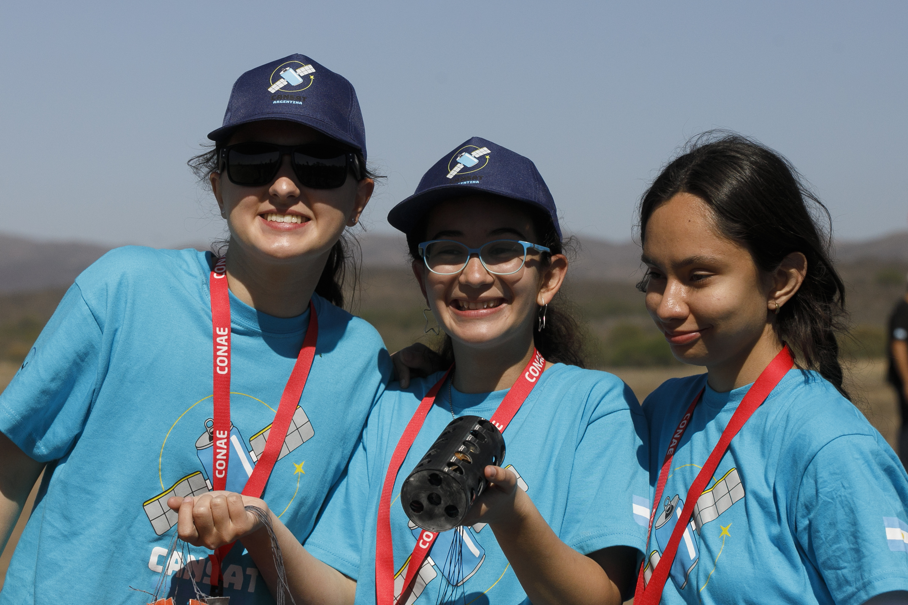
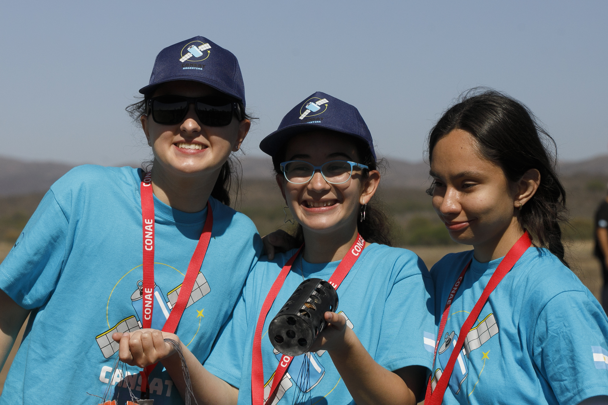

Ganadores de CANSAT 2023
Para el lanzamiento del satélite, CONAE nos invitó a una jornada de 3 días en Alta Gracia dónde conocimos a los otros equipos ganadores: Concorsat de Entre Ríos, Cóndor Salvaje de Tucumán, Hyperion de CABA y Roldán 2 de Santa Fe.
El primer día, conocimos al resto de los equipos y nos regalaron remeras de CANSAT y algunas otras prendas
Luego nos llevaron al predio del Centro Espacial Teófilo Tabanera dónde realizamos pruebas ambientales para verificar que el satélite estaba listo para el lanzamiento:
Ese día hicimos sorteo para establecer quién haría primero las pruebas, el lanzamiento y la presentación de resultados. En el sorteo salimos primeros.
Todo salió perfecto en las pruebas, ¡así que estabamos listos para volar!


Al día siguiente realizamos el tan esperado lanzamiento:


 



Así estábamos después del lanzamiento:

Para el último día, realizamos la presentación de los datos obtenidos en el lanzamiento. Cada equipo tenía entre 5 y 10 minutos para exponer:


Antes de terminar la jornada tuvimos una visita guiada por todo el predio de CONAE